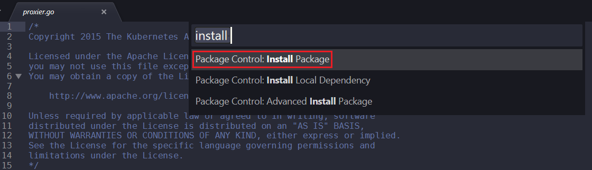
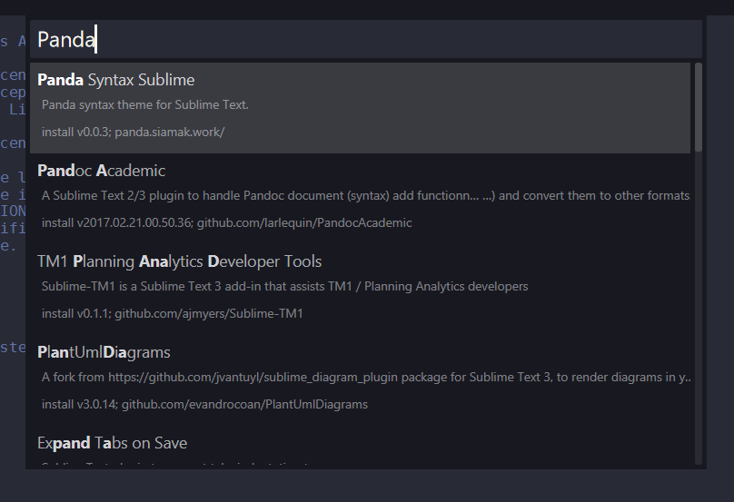
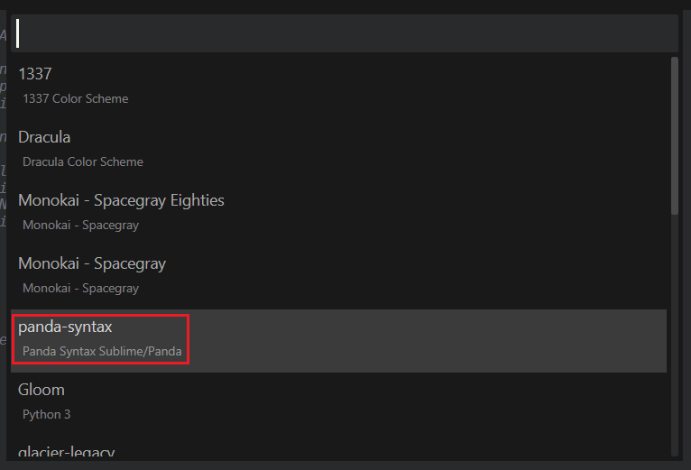
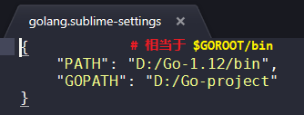
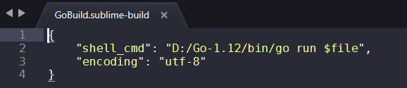
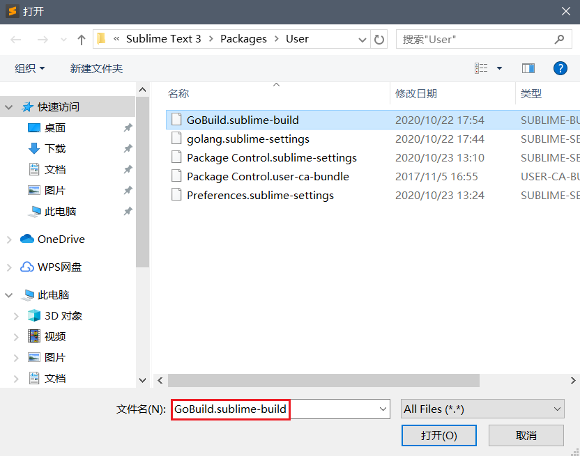
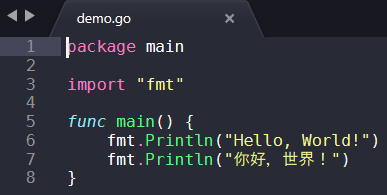
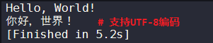
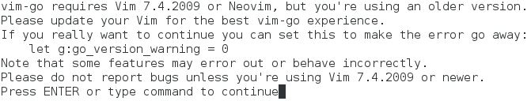

文档说明：
- OS 版本：CentOS Linux release 7.4.1708 (Core)
- Golang 版本：go1.12 linux/amd64
文档目录：
- Windows 安装 Go 语言环境
- Windows 下 Sublime Text 3 安装配色方案与 Golang 开发环境插件
- Linux 安装 Go 语言环境
- vim-go 插件配置 Go 语言开发环境
Windows 安装 Go 语言环境：
- 可直接使用
.msi安装包根据提示安装，go 环境变量可参考 Linux 中 go 环境变量设置。
Windows 下 Sublime Text 3 安装配色方案与 Go 开发环境插件：
- 安装配色方案（以
Panda配色方案为例）：- 常用配色方案：Dracula、Panda。
- 打开 Sublime Text 3，按
Ctrl+Shift+P打开控制窗口。 - 输入
install，选择第一个 Install Package 以安装相关配色方案。
 - 输入相关配色方案名称，并选择安装，其安装过程显示在窗口最底端。
 - 配色方案安装完毕后，可在如下路径选择使用：
Preferences > Color Scheme… >panda-syntax

- 安装 Golang 开发环境插件：
- 按
Ctrl+Shift+P打开控制窗口。 - 输入 golang 后将加载显示
Golang Build官方插件，点击安装该插件。 - 完成安装后配置该插件：
Preferences > Package Settings > Golang Config >Settings-User - 为 Golang Build 插件定义 Golang 语言环境变量：
 - 配置自动编译运行 Golang：
- 创建自动编译运行 Golang 的配置文件：
- Tools > Build System >
New Build System... - 定义编译运行 Golang 的命令与参数，并将其命名为
GoBuild.sublime-build保存。 - 该定义文件名称可自定义。

- 打开测试用 go 文件，使用
Ctrl+B编译运行查看结果。

- 按
Linux 安装 Go 语言环境：
- 下载 Golang 语言环境压缩包：go1.12.linux-amd64.tar.gz
- Golang 语言环境安装：
1
2
3
4
5
6
7
8
9
10
11
12
13
14
15
16
17
18
19$ sudo tar -zxvf go1.12.linux-amd64.tar.gz -C /usr/local
# 解压并解包 go 语言环境
$ mkdir -p $HOME/go/{bin,pkg,src}
# 创建 go 语言工作目录树
$ vim $HOME/.bashrc
### Define Go programme environment ###
export GOROOT=/usr/local/go
# root directory to install go
export GOPATH=$HOME/go
# directory to store go project
export GOBIN=$GOPATH/bin
# store go command builded
export PATH=$PATH:$GOROOT/bin:$GOBIN
$ source $HOME/.bashrc
# 加载 go 语言环境变量
$ go version
go version go1.12 linux/amd64
# 查看 go 语言环境版本
vim-go 插件配置 Go 语言开发环境：
- 由于 CentOS 7.4 自带的 vim 版本为
vim-enhanced-7.4.160-2.el7.x86_64，该版本不支持 golang 语言的语法高亮特性，因此需要额外安装vim-go插件用以支持该特性，而 CentOS 8.x 或 RHEL 8.x 中自带vim 8可支持。 配置方法如下所示：
👉 Vim 插件管理器使用：
1
2
3
4
5
6
7
8
9
10
11
12
13
14
15
16
17
18
19
20
21
22
23
24
25
26
27
28
29
30
31
32
33
34
35
36
37
38
39
40
41
42
43
44
45
46
47
48
49
50
51
52$ git clone https://github.com/VundleVim/Vundle.vim.git ~/.vim/bundle/Vundle.vim
# 下载安装 vim 插件管理器
$ cd ~/.vim/bundle/Vundle.vim/ && vim README.md
set nocompatible # be iMproved, required
filetype off # required
# set the runtime path to include Vundle and initialize
set rtp+=~/.vim/bundle/Vundle.vim
call vundle#begin()
# alternatively, pass a path where Vundle should install plugins
#call vundle#begin('~/some/path/here')
# let Vundle manage Vundle, required
Plugin 'VundleVim/Vundle.vim'
# The following are examples of different formats supported.
# Keep Plugin commands between vundle#begin/end.
# plugin on GitHub repo
Plugin 'tpope/vim-fugitive'
# plugin from http://vim-scripts.org/vim/scripts.html
# Plugin 'L9'
# Git plugin not hosted on GitHub
Plugin 'git://git.wincent.com/command-t.git'
# git repos on your local machine (i.e. when working on your own plugin)
Plugin 'file:///home/gmarik/path/to/plugin'
# The sparkup vim script is in a subdirectory of this repo called vim.
# Pass the path to set the runtimepath properly.
Plugin 'rstacruz/sparkup', {'rtp': 'vim/'}
# Install L9 and avoid a Naming conflict if you've already installed a
# different version somewhere else.
# Plugin 'ascenator/L9', {'name': 'newL9'}
# All of your Plugins must be added before the following line
call vundle#end() " required
filetype plugin indent on " required
# To ignore plugin indent changes, instead use:
#filetype plugin on
#
# Brief help
# :PluginList - lists configured plugins
# :PluginInstall - installs plugins; append `!` to update or just :PluginUpdate
# :PluginSearch foo - searches for foo; append `!` to refresh local cache
# :PluginClean - confirms removal of unused plugins; append `!` to auto-approve removal
#
# see :h vundle for more details or wiki for FAQ
# Put your non-Plugin stuff after this line
# 进入 vim 插件管理器目录，并选择 "3. Configure Plugins" 中的相应插件内容，将其复制至 ~/.vimrc 文件的顶部。
# 可根据需要添加或删除指定的插件。
$ git clone https://github.com/fatih/vim-go.git ~/.vim/bundle/vim-go
# 下载安装 vim-go 插件使 vim 支持 Go 语言开发，包括语法高亮、语法错误检查等。
# 注意该插件的下载路径！👉 启用
vim-go插件：1
2
3
4
5
6
7
8
9
10
11
12
13
14
15
16
17
18
19
20
21
22
23
24
25
26
27
28
29
30
31
32
33$ vim ~/.vimrc
# Configure Go Programming Language vim Environment
# set nocompatible " be iMproved, required
filetype off # required
set rtp+=~/.vim/bundle/Vundle.vim
call vundle#begin()
# Install vim-go
Plugin 'fatih/vim-go'
# Install Dracula color theme
Plugin 'dracula/vim', {'name': 'dracula'}
call vundle#end() " required
filetype plugin indent on " required
# Extented Command
let g:go_version_warning = 0
# 由于 vim 版本过低在启动时将报错，该指令可去除报错。
set nu
set tabstop=2
# set cursorline
# set cursorcolumn
# colorscheme dracula
colorscheme elflord
# Auto YAML syntax
autocmd FileType yaml setlocal ai ts=2 sw=2 et
$ vim +PluginInstall +qall
# 安装所有的 vim 插件
$ vim <go_filename>.go
# 编辑 go 文件验证 vim-go 插件安装
若不添加
let g:go_version_warning = 0，报错如下，可直接回车继续使用 vim。
